건설재료시험기사 (2019-04-27 기출문제)
1과목: 콘크리트공학
1. 다음 중 경화콘크리트의 강도 추정을 위한 비파괴 시험법이 아닌 것은?
- 반발경도법
- 초음파속도법
- 조합법
- 비중계법
(정답률: 64%)

2. 콘크리트의 다짐방법으로 내부진동기를 사용한 경우와 비교할 때 원심력 다짐의 특징이 아닌 것은?
- 물-시멘트비를 줄일 수 있다.
- 강도가 감소하는 경향이 있다.
- 재료분리가 일어나기 쉽다.
- 원통형이 제품을 생산하기 쉽다.
(정답률: 52%)
3. 해양 콘크리트 구조물이 해양 환경에 의한 철근 부식에 영향을 가장 많이 받는 위치는?
- 해중
- 해상대기중
- 물보라 지역
- 구조물의 내부
(정답률: 78%)
4. 콘크리트의 워커빌리티(workability)를 측정하기 위한 시험 방법 중 콘크리트에 일정한 에너지를 가하는 밀도의 변화를 수치적으로 나타내는 시험법은?
- 흐름 시험(flow test)
- 슬럼프 시험(slump test)
- 리몰딩 시험(remolding test)
- 다짐 계수 시험(compacting tactor test)
(정답률: 70%)
5. 팽창콘크리트의 팽창률에 대한 설명으로 틀린 것은?
- 콘크리트의 팽창률은 일반적으로 재령 28일에 대한 시험치를 기준으로 한다.
- 수축보상용 콘크리트의 팽창률은 (150~250)×10-6을 표준으로 한다.
- 화학적 프리스트레스용 콘크리트의 팽창률은 (200~700)×10-6을 표준으로 한다.
- 공장제품에 사용되는 화학적 프리스트레스용 콘크리트의 팽창률은 (200~1000)×10-6을 표준으로 한다.
(정답률: 70%)
6. 굵은 골재 최대 치수는 질량비로서 전체 골재질량의 몇 % 이상을 통과시키는 체의 최소 호칭치수를 의미하는가?
- 80%
- 85%
- 90%
- 95%
(정답률: 83%)
7. 단면적이 600cm2인 프리스트레스트 콘크리트에서 콘크리트 도심에 PS강선을 배치하고 초기프리스트레스 Pi = 340000 N을 가할 때 콘크리트의 탄성변형에 의한 프리스트레스의 감소량은 얼마인가? (단, 탄성계수비 n = 6 이다.)
- 34 MPa
- 38 MPa
- 42 MPa
- 46 MPa
(정답률: 50%)
8. 매스 콘크리트의 균열을 방지하기 위한 대책으로 잘못된 것은?
- 수화열이 적은 시멘트를 사용한다.
- 단위 시멘트량을 적게 한다.
- 슬럼프를 크게 한다.
- 프리쿨링을 실시한다.
(정답률: 62%)
9. 레디믹스트 콘크리트에서 보통콘크리트 공기량의 허용 오차는?
- ± 1 %
- ± 1.5 %
- ± 2 %
- ± 2.5 %
(정답률: 70%)
10. 유동화 콘크리트의 슬럼프 증가량은 몇 mm 이하를 원칙으로 하는가?
- 50 mm
- 80 mm
- 100 mm
- 120 mm
(정답률: 70%)
11. 소규모 공사에서 배합강도, fcr=24MPa을 얻기 위해서
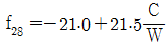
식을 사용한다면 시멘트-물비는?- 1.94
- 2.00
- 2.09
- 2.15
(정답률: 59%)
12. 결합재로 시멘트와 시멘트 혼화용 폴리머(또는 폴리머 혼화제)를 사용한 콘크리트는?
- 폴리머 시멘트 콘크리트
- 폴리머 함침 콘크리트
- 폴리머 콘크리트
- 레진 콘크리트
(정답률: 78%)
13. 다음은 고강도 콘크리트에 대한 설명이다. 옳지 않은 것은?
- 고강도 콘크리트는 공기연행 콘크리트로 하는 것을 원칙으로 한다.
- 고강도 콘크리트에 사용하는 골재의 품질기준에 의하면, 잔골재의 염화물 이온량은 0.02% 이하이다.
- 고강도 콘크리트의 설계기준압축강도는 일반적으로 40MPa 이상으로 하며, 고강도 경량골재 콘크리트는 27MPa 이상으로 한다.
- 고강도 콘크리트에 사용하는 골재의 품질기준에 의하면, 잔골재의 흡수율은 3% 이하, 굵은 골재의 흡수율은 2% 이하이다.
(정답률: 57%)
14. 콘크리트의 양생에 대한 설명 중 틀린 것은?
- 수밀성 콘크리트의 습윤 양생 기간은 일반 경우보다 길게 한다.
- 양생은 장기 강도에 영향을 끼치므로 28일 이후의 양생에 특히 주의한다.
- 콘크리트를 타설한 후 급격히 온도가 상승할 경우 콘크리트가 건조하지 않도록 주의한다.
- 콘크리트를 타설한 후 경화를 시작하기까지 직사광선을 피한다.
(정답률: 74%)
15. 시합배상표상 단위잔골재량은 643 kg/m3이며, 단위 굵은 골재량은 1212 kg/m3 이다. 현장배합을 위한 단위 잔골재량은 얼마인가? (단, 현장 골재의 체분석 결과 잔골재 중 5mm체에 남는 것이 5%, 굵은 골재 중 5mm체를 통과하는 것이 10% 이다.)
- 538 kg/m3
- 588 kg/m3
- 613 kg/m3
- 637 kg/m3
(정답률: 60%)
16. 양단이 정착된 프리텐션 부재의 한 단에서의 활동량이 2mm로 양단 활동량이 4mm일 때 강재의 길이가 10m라면 이 때의 프리스트레스 감소량으로 맞는 것은? (단, 긴장재의 탄성계수(Ep)=2.0×105MPa)
- 80 MPa
- 100 MPa
- 120 MPa
- 140 MPa
(정답률: 45%)
17. 콘크리트의 동결융행에 대한 설명 중 틀린 것은?
- 다공질의 골재를 사용한 콘크리트는 일반적으로 동결융해에 대한 저항성이 떨어진다.
- 콘크리트의 표층박리(scaling)는 동결융해작용에 의한 피해의 일종이다.
- 동결융해에 의한 콘크리트의 피해는 콘크리트가 물로 포화되었을 때 가장 크다.
- 콘크리트의 초기 동결융해에 대한 저항성을 높이기 위해서는 물-시멘트비를 크게 한다.
(정답률: 77%)
18. 일반콘크리트의 비비기는 미리 정해둔 비비기 시간의 최대 몇 배 이상 계속해서는 안 되는가?
- 2배
- 3배
- 4배
- 5배
(정답률: 83%)
19. 공기연행 콘크리트의 공기량에 대한 설명으로 옳은 것은? (단, 굵은 골재의 최대치수는 40mm를 사용한 일반콘크리트로서 보통 노출인 경우)
- 4.0%를 표준으로 하며, 그 허용 오차는 ±1.0% 로 한다.
- 4.5%를 표준으로 하며, 그 허용 오차는 ±1.0% 로 한다.
- 4.0%를 표준으로 하며, 그 허용 오차는 ±1.5% 로 한다.
- 4.5%를 표준으로 하며, 그 허용 오차는 ±1.5% 로 한다.
(정답률: 73%)
20. 압축강도에 의한 콘크리트의 품질검사에서 판정기준으로 옳은 것은? (단, 설계기준압축강도로부터 배합을 정한 경우로서 fck ＞ 35MPa인 콘크리트이며, 일반콘크리트 표준시방서 규정을 따른다.)
- ㉠ 연속 3회 시험값의 평균이 fck의 95% 이상, ㉡ 1회 시험값이 fck의 90% 이상
- ㉠ 연속 3회 시험값의 평균이 fck의 95% 이상, ㉡ 1회 시험값이 fck의 95% 이상
- ㉠ 연속 3회 시험값의 평균이 fck 이상, ㉡ 1회 시험값이 (fck-3.5MPa) 이상
- ㉠ 연속 3회 시험값의 평균이 fck 이상, ㉡ 1회 시험값이 fck의 90% 이상
(정답률: 67%)
2과목: 건설시공 및 관리
21. 아래의 표에서 설명하는 아스팔트 포장의 파손은?
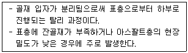
- 영구 변형(Rutting)
- 라벨링(Raveling)
- 블록 균열
- 피로 균열
(정답률: 64%)
22. 다짐 장비 중 마무리 다짐 및 아스팔트 포장의 끝손질에 사용하면 가장 유용한 장비는?
- 탠덤 롤러
- 타이어 롤러
- 탬핑 롤러
- 머캐덤 롤러
(정답률: 58%)
23. 공사일수를 3점 시간 추정법에 의해 산정할 경우 적절한 공사 일수는? (단, 낙관일수는 6일, 정상일수는 8일, 비관일수는 10일이다.)
- 6일
- 7일
- 8일
- 9일
(정답률: 74%)
24. 사장교를 케이블 형상에 따라 분류할 때 그 종류가 아닌 것은?
- 프랫형(Pratt)
- 방사형(Radiating)
- 하프형(Harp)
- 별형(Star)
(정답률: 70%)
25. 필형 댐(fill type dam)의 설명으로 옳은 것은?
- 필형 댐은 여수로가 반드시 필요하지는 않다.
- 암반강도 면에서는 기초 암반에 걸리는 단위 체적당 힘은 콘크리트 댐보다 크므로 콘크리트 댐보다 제약이 많다.
- 필형 댐은 홍수 시 월류에도 대단히 안정하다.
- 필형 댐에서는 여수로를 댐 본체(本體)에 설치할 수 없다.
(정답률: 64%)
26. 암석 시험발파의 주된 목적으로 옳은 것은?
- 폭파계수 C를 구하려고 한다.
- 발파량을 추정하려고 한다.
- 폭약의 종류를 결정하려고 한다.
- 발파장비를 결정하려고 한다.
(정답률: 71%)
27. 아스팔트계 포장에서 거북등 균열(Alligator Cracking)이 발생하였다면 그 원인으로 가장 적당한 것은?
- 아스팔트와 골재 사이의 접착이 불량하다.
- 아스팔트를 가열할 때 Overheat 하였다.
- 포장의 전압이 부족하다.
- 노반의 지지력이 부족하다.
(정답률: 60%)
28. 공정관리 기법인 PERT기법을 설명한 것 중 틀린 것은?
- 공법의 주목적은 공기 단축이다.
- 신규 사업, 비반복 사업에 많이 이용된다.
- 3점 시간 추정법을 사용한다.
- activity 중심의 일정으로 계산한다.
(정답률: 65%)
29. 다음 조건일 때 트랙터 셔블(Tractor shovel) 운전 1시간당 싣기 작업량은? (단, 버킷 용량 1.0m3, 버킷 계수 1.0, 사이클 타임 50초, f = 1.0, E = 0.75)
- 125 m3/h
- 90 m3/h
- 54 m3/h
- 40 m3/h
(정답률: 64%)
30. 옹벽 등 구조물의 뒤채움 재료에 대한 조건으로 틀린 것은?
- 투수성이 있어야 한다.
- 압축성이 좋아야 한다.
- 다짐이 양호해야 한다.
- 물의 침입에 의한 강도 저하가 적어야 한다.
(정답률: 72%)
31. 터널의 계획, 설계, 시공 시 본바닥의 성질 및 지질구조를 가장 정확하게 알기 위한 조사 방법은?
- 물리적 탐사
- 탄성파 탐사
- 전기 탐사
- 보링(Boring)
(정답률: 73%)
32. 다음과 같은 점토 지반에서 연속 기초의 극한 지지력을 Terzaghi 방법으로 구하면 얼마인가? (단, 흙의 점착력 1.5 t/m2, 기초의 깊이 1m, 흙의 단위중량 1.6 t/m3, 지지력 계수 Nc = 5.3, Nq = 1.0)
- 7.⑤ t/m2
- 8.78 t/m2
- 9.55 t/m2
- 12.98 t/m2
(정답률: 49%)
33. 성토재료로서 사질토와 점성토의 특징에 대한 설명 중 옳지 않은 것은?
- 사질토는 횡방향 압력이 크고 점성토는 작다.
- 사질토는 다짐과 배수가 양호하다.
- 점성토는 전단강도가 작고 압축성과 소성이 크다.
- 사질토는 동결 피해가 작고 점성토는 동결 피해가 크다.
(정답률: 53%)
34. 옹벽에 작용하는 토압을 산정하기 위해 Rankine의 토압론을 적용하고자 한다. Rankine 토압계산 시 이용되는 기본 가정이 아닌 것은?
- 토압을 지표에 평행하게 작용한다.
- 흙은 매우 균질한 재료이다.
- 흙은 비압축성 재료이다.
- 지표면은 유한한 평면으로 존재한다.
(정답률: 59%)
35. 말뚝 기초공사에는 많은 말뚝을 박아야 하는데 일반적인 원칙은?
- 외측에서 먼저 박는다.
- 중앙부에서 먼저 박는다.
- 중앙부에서 좀 떨어진 부분부터 먼저 박는다.
- +자형으로 먼저 박는다.
(정답률: 69%)
36. 각종 준설선에 관한 설명 중 옳지 않은 것은?
- 그래브준설선은 버킷으로 해저의 토사를 굴삭하여 적재하고 운반하는 준설선을 말한다.
- 디퍼준설선은 파쇄된 암석이나 발파된 암석의 준설에는 부적당하다.
- 펌프준설선은 사질해저의 대량준설과 매립을 동시에 시행할 수 있다.
- 쇄암선은 해저의 암반을 파쇄하는 데 사용한다.
(정답률: 54%)
37. 도로공사에서 성토해야 할 토량이 36000m3 인데 흐트러진 토량이 30000m3가 있다. 이때 L = 1.25, C = 0.9라면 자연상태 토량의 부족토량은?
- 8000 m3
- 12000 m3
- 16000 m3
- 20000 m3
(정답률: 61%)
38. 불투수층에서 최소 침강 지하수면까지의 거리를 1m, 암거의 간격 10m, 투수계수 k=1×10-5cm/s라 할 때 이 암거의 단위 길이당 배수량을 Donnan식에 의하여 구하면 얼마인가?
- 2×10-2 cm3/cm/s
- 2×10-4 cm3/cm/s
- 4×10-2 cm3/cm/s
- 4×10-4 cm3/cm/s
(정답률: 45%)
39. 단독 말뚝의 지지력과 비교하여 무리 말뚝 한 개의 지지력에 관한 설명으로 옳은 것은? (단, 마찰말뚝이라 한다.)
- 두 말뚝의 지지력이 똑같다.
- 무리 말뚝의 지지력이 크다.
- 무리 말뚝의 지지력이 작다.
- 무리 말뚝의 크기에 따라 다르다.
(정답률: 58%)
40. 본바닥의 토량 500m3을 6일 동안에 걸쳐 성토장까지 운반하고자 한다. 이 때 필요한 덤프트럭을 몇 대인가? (단, 토량 변화율 L=120, 1대 1일당의 운반횟수는 5회, 덤프트럭의 적재용량은 5m3 으로 한다.)
- 1대
- 4대
- 6대
- 8대
(정답률: 55%)
3과목: 건설재료 및 시험
41. 고무혼입 아스팔트(rubberized asphalt)를 스트레이트 아스팔트와 비교할 때 특징으로 옳지 않은 것은?
- 응집성 및 부착성이 크다.
- 내노화성이 크다.
- 마찰계수가 크다.
- 감온성이 크다.
(정답률: 72%)
42. 용어의 설명으로 틀린 것은?
- 인장력에 재료가 길게 늘어나는 성질을 연성이라 한다.
- 외력에 의한 변형이 크게 일어나는 재료를 강성이 큰 재료라고 한다.
- 작은 변형에도 쉽게 파괴되는 성질을 취성이라 한다.
- 재료를 두들길 때 엷게 펴지는 성질을 전성이라 한다.
(정답률: 68%)
43. 목재에 대한 설명으로 틀린 것은?
- 목재의 벌목에 적당한 시기는 가을에서 겨울에 걸친 기간이다.
- 목재의 건조방법 중 끓임법은 자연건조법의 일종이다.
- 목재의 방부처리법은 표면처리법과 방부제 주입법으로 크게 나눌 수 있다.
- 목재의 비중은 보통 기건비중을 말하며 이때의 함수율은 15% 전후이다.
(정답률: 73%)
44. 콘크리트용 굵은 골재의 내구성을 판단하기 위해서 황산나트륨에 의한 안정성 시험을 할 경우 조작을 5번 반복했을 때 굵은 골재의 손실질량은 얼마 이하를 표준으로 하는가?
- 5%
- 8%
- 10%
- 12%
(정답률: 49%)
45. 잔골재의 밀도 및 흡수율 시험(KS F 2504)에 대한 설명으로 틀린 것은?
- 일반적으로 플라스크는 검정된 것으로써 100mL로 하는 경우가 많다.
- 절대 건조 상태의 체적에 대한 절대 건조 상태의 질량을 진밀도라고 한다.
- 밀도는 2회 시험의 평균값으로 결정하는데 이때 시험값은 평균과의 차이가 0.01g/cm3 이하여야 한다.
- 흡수율은 2회 시험의 평균값으로 결정하는데 이때 시험값은 평균과의 차이가 0.⑤% 이하여야 한다.
(정답률: 44%)
46. 시멘트 조성 광물에서 수축률이 가장 큰 것은?
- C3S
- C3A
- C4AF
- C2S
(정답률: 54%)
47. 아스팔트의 특성에 대한 설명 중 틀린 것은?
- 점성과 감온성이 있다.
- 불투서성이어서 방수재료로도 사용된다.
- 점착성이 크고 부착성이 좋기 때문에 결합재료, 접착재료로 사용한다.
- 아스팔트는 증발감량이 작다.
(정답률: 57%)
48. 포틀랜드시멘트 주성분의 함유 비율에 대한 시멘트의 특성을 설명한 것으로 옳은 것은?
- 수경률(H.M)이 크면 초기 강도가 크고 수화열이 큰 시멘트가 생긴다.
- 규산율(S.M)이 크면 C3A가 많이 생성되어 초기 강도가 크다.
- 철률(I.M)이 크면 초기 강도는 작고 수화열이 작아지며 화학 저항성이 놓은 시멘트가 된다.
- 일반적으로 중용열 포틀랜드 시멘트가 조강 포틀랜드 시멘트보다 수경률(H.M)이 크다.
(정답률: 44%)
49. 고로슬래그 미분말을 사용한 콘크리트에 대한 설명으로 잘못된 것은?
- 수밀성이 향상된다.
- 염화물이온 침투 억제에 의한 철근 부식억제에 효과가 있다.
- 수화발열 속도가 빨라 조기강도가 향상된다.
- 블리딩이 작고 유동성이 향상된다.
(정답률: 54%)
50. 석재의 내구성에 관한 설명으로 옳지 않은 것은?
- 알루미나 화합물, 규산, 규산염류는 풍화가 잘 되지 않는 조암광물이다.
- 동일한 석재라도 풍토, 기후, 노출 상태에 따라 풍화 속도가 다르다.
- 흡수율이 작은 석재일수록 동해를 받기 쉽고 내구성이 약하다.
- 조암광물의 풍화 정도에 따라 내구성이 달라진다.
(정답률: 64%)
51. 다음 중 토목공사 발파에 사용되는 것으로 폭발력이 가장 약한 것은?
- 흑색화약
- T.N.T
- 다이너마이트(dynamite)
- 칼릿(carlit)
(정답률: 70%)
52. 광물질 혼화재 중의 실리카가 시멘트 수화 생성물인 수산화칼륨과 반응하여 장기 강도 증진 효과를 발휘하는 현상을 무엇이라 하는가?
- 포졸란 반응(pozzolan reaction)
- 수화 반응(hydration reaction)
- 볼 베이링(ball bearing) 작용
- 충전(filler) 효과
(정답률: 69%)
53. 잔골재의 조립률 2.3, 굵은 골재의 조립률 7.0을 사용하여 잔골재와 굵은 골재를 1 : 1.5 의 비율로 혼합하면 이때 혼합된 골재의 조립률은?
- 4.92
- 5.12
- 5.32
- 5.52
(정답률: 45%)
54. 컷백 아스팔트(Cutback asphalt) 중 건조가 가장 빠른 것은?
- MC
- SC
- LC
- RC
(정답률: 61%)
55. 시멘트의 저장 방법으로 옳지 않은 것은?
- 방습 구조로 된 사일로(silo) 또는 창고에 품종별로 구분하여 저장한다.
- 3개월 이상 장기간 저장한 시멘트는 사용하기 전에 시험을 실시한다.
- 포대시멘트는 지상 100mm 이상 되는 마루에 쌓아 저장한다.
- 저장 중에 약간이라도 굳은 시멘트는 공사에 사용해서는 안 된다.
(정답률: 69%)
56. 길이가 15cm인 어떤 금속을 17cm로 인장시켰을 때 폭이 6cm에서 5.8cm가 되었다. 이 금속의 푸아송 비는?
- 0.15
- 0.20
- 0.25
- 0.30
(정답률: 53%)
57. 어떤 모래를 체가름 시험한 결과가 아래의 표와 같을 때 조립률은?
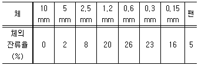
- 2.56
- 2.68
- 2.72
- 3.72
(정답률: 53%)
58. 콘크리트용 혼화재료에 관한 설명 중 틀린 것은?
- 플라이애시를 사용한 콘크리트의 경우 목표 공기량을 얻기 위해서는 플라이애시를 사용하지 않은 콘크리트에 비해 AE제의 사용량이 증가된다.
- 고로슬래그 미분말은 비결정질의 유리질 재료롤 잠재수경성을 가지고 있으며, 유리화율이 높을수록 잠재수경성 반응은 커진다.
- 실리카퓸은 평균입경이 0.1μm 크기의 초미립자로 이루어진 비결정질 재료로 포졸란 반응을 한다.
- 팽창재를 사용한 콘크리트 팽창률 및 압축강도는 팽창재 혼입량이 증가되면 될수록 증가한다.
(정답률: 50%)
59. 토목섬유(geotextiles)의 특징에 대한 설명으로 틀린 것은?
- 인장강도가 크다.
- 탄성계수가 작다.
- 차수성, 분리성, 배수성이 크다.
- 수축을 방지한다.
(정답률: 66%)
60. 암석의 구조에 대한 설명 중 옳은 것은?
- 암석의 가공이나 채석에 이용되는 것으로 갈라지기 쉬운 면을 석리라 한다.
- 퇴적암이나 변성암의 일부에서 생기는 평행상의 절리를 벽개라 한다.
- 암석 특유의 천연적으로 갈라진 금을 절리라 한다.
- 암석을 구성하고 있는 조암광물의 집합상태에 따라 생기는 눈모양을 층리라 한다.
(정답률: 54%)
4과목: 토질 및 기초
61. Rod에 붙인 어떤 저항체를 지중에 넣어 관입, 인발 및 회전에 의해 흙의 전단강도를 측정하는 원위치 시험은?
- 보링(boring)
- 사운딩(sounding)
- 시료채취(sampling)
- 비파괴 시험(NDT)
(정답률: 61%)
62. 사면의 안정에 관한 다음 설명 중 옳지 않은 것은?
- 임계 활동면이란 안전율이 가장 크게 나타나는 활동면을 말한다.
- 안전율이 최소로 되는 활동면을 이루는 원을 임계원이라 한다.
- 활동면에 발생하는 전단응력이 흙의 전단강도를 초과할 경우 활동이 일어난다.
- 활동면은 일반적으로 원형활동면으로 가정한다.
(정답률: 49%)
63. 모래의 밀도에 따라 일어나는 전단특성에 대한 다음 설명 중 옳지 않은 것은?
- 다시 성형한 시료의 강도는 작아지지만 조밀한 모래에서는 시간이 경과됨에 따라 강도가 회복 된다.
- 내부마찰각(ø)은 조밀한 모래일수록 크다.
- 직접 전단시험에 있어서 전단응력과 수평변위 곡선은 조밀한 모래애서는 peak가 생긴다.
- 조밀한 모래에서는 전단변형이 계속 진행되면 부피가 팽창한다.
(정답률: 39%)
64. 모래지반에 30cm×30cm 의 재하판으로 재하실험을 한 결과 10t/m2의 극한 지지력을 얻었다. 4m×4m의 기초를 설치할 때 기대되는 극한지지력은?
- 10 t/m2
- 100 t/m2
- 133 t/m2
- 154 t/m2
(정답률: 58%)
65. 단동식 증기 해머로 말뚝을 박았다. 해머의 무게 2.5t, 낙하고 3m, 타격 당 말뚝의 평균 관입량 1cm, 안전율 6 일 때 Engineering-News 공식으로 허용지지력을 구하면?
- 250 t
- 200 t
- 100 t
- 50 t
(정답률: 40%)
66. 흙의 다짐 효과에 대한 설명 중 틀린 것은?
- 흙의 단위중량 증가
- 투수계수 감소
- 전단강도 저하
- 지반의 지지력 증가
(정답률: 55%)
67. 아래 그림과 같이 지표면에 집중하중이 작용할 때 A점에서 발생하는 연직응력의 증가량은?
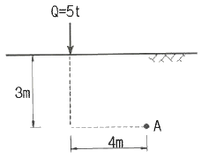
- 20.6 kg/m2
- 24.4 kg/m2
- 27.2 kg/m2
- 30.3 kg/m2
(정답률: 30%)
68. 다음 중 점성토 지반의 개량공법으로 거리가 먼 것은?
- paper drain 공법
- vibro-flotation 공법
- chemico pile 공법
- sand compaction pile 공법
(정답률: 63%)
69. 다음은 전단시험을 한 응력경로이다. 어느 경우인가?
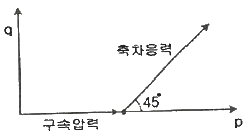
- 초기단계의 최대주응력과 최소주응력이 같은 상태에서 시행한 삼축압축시험의 전응력 경로이다.
- 초기단계의 최대주응력과 최소주응력이 같은 상태에서 시행한 일축압축시험의 전응력 경로이다.
- 초기단계의 최대주응력과 최소주응력이 같은 상태에서 Ko=0.5인 조건에서 시행한 삼축압축시험의 전응력 경로이다.
- 초기단계의 최대주응력과 최소주응력이 같은 상태에서 Ko=0.7인 조건에서 시행한 일축압축시험의 전응력 경로이다.
(정답률: 38%)
70. 다음과 같이 널말뚝을 박은 지반의 유선망을 작도하는데 있어서 경계조건에 대한 설명으로 틀린 것은?
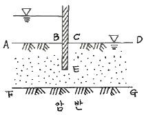
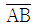
는 등수두선이다.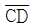
는 등수두선이다.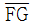
는 유선이다.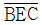
는 등수두선이다.
(정답률: 62%)
71. 아래 그림과 같은 3m×3m 크기의 정사각형 기초의 극한지지력을 Terzaghi 공식으로 구하면? (단, 내부마찰각(ø)은 20°, 점착력(c)은 5t/m2, 지지력계수 Nc=18, Nγ=5, Nq=7.5 이다.)
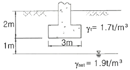
- 135.71 t/m2
- 149.52 t/m2
- 157.26 t/m2
- 174.38 t/m2
(정답률: 32%)
72. 흙 입자의 비중은 2.56, 함수비는 35%, 습윤단위중량은 1.75g/cm3 일 때 간극률은 약 얼마인가?
- 32%
- 37%
- 43%
- 49%
(정답률: 31%)
73. 토압에 대한 다음 설명 중 옳은 것은?
- 일반적으로 정지토압 계수는 주동토압 계수보다 작다.
- Rankine 이론에 의한 주동토압의 크기는 Coulomb 이론에 의한 값보다 작다.
- 옹벽, 흙막이벽체, 널말뚝 중 토압분포가 삼각형 분포에 가장 가까운 것은 옹벽이다.
- 극한 주동상태는 수동상태보다 훨씬 더 큰 변위에서 발생한다.
(정답률: 41%)
74. 어떤 종류의 흙에 대해 직접전단(일면전단) 시험을 한 결과 아래 표와 같은 결과를 얻었다. 이 값으로부터 점착력(c)을 구하면? (단, 시료의 단면적은 10cm2 이다.)
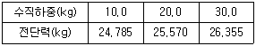
- 3.0 kg/cm2
- 2.7 kg/cm2
- 2.4 kg/cm2
- 1.9 kg/cm2
(정답률: 33%)
75. 예빈비가 큰 점토란 어느 것인가?
- 입자의 모양이 날카로운 점토
- 입자가 가늘고 긴 형태의 점토
- 다시 반죽했을 때 강도가 감소하는 점토
- 다시 반죽했을 때 강도가 증가하는 점토
(정답률: 51%)
76. 그림과 같이 모래층에 널말뚝을 설치하여 물막이공 내의 물을 배수하였을 때, 분사현상이 일어나지 않게 하려면 얼마의 압력( )을 가하여야 하는가? (단, 모래의 비중은 2.65, 간극비는 0.65, 안전율은 3)
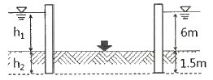
- 6.5 t/m2
- 16.5 t/m2
- 23 t/m2
- 33 t/m2
(정답률: 46%)
77. 표준압밀시험을 하였더니 하중 강도가 2.4kg/cm2에서 3.6kg/cm2로 증가할 때 간극비는 1.8에서 1.2로 감소하였다. 이 흙의 최종침하량은 약 얼마인가? (단, 압밀층의 두께는 20m 이다.)
- 428.64 m
- 214.29 m
- 642.86 m
- 285.71 m
(정답률: 23%)
78. 토립자가 둥글고 입도분포가 나쁜 모래 지반에서 표준관입시험을 한 결과 N치는 10이었다. 이 모래의 내부 마찰각을 Dunham의 공식으로 구하면?
- 21°
- 26°
- 31°
- 36°
(정답률: 43%)
79. 말뚝의 부마찰력에 대한 설명 중 틀린 것은?
- 부마찰력이 작용하면 지지력이 감소한다.
- 연약지반에 말뚝을 박은 후 그 위에 성토를 한 경우 일어나기 쉽다.
- 부마찰력은 말뚝 주변 침하량이 말뚝의 침하량보다 클 때 아래로 끌어내리는 마찰력을 말한다.
- 연약한 점토에 있어서는 상대변위의 속도가 느릴수록 부마찰력은 크다.
(정답률: 43%)
80. 유선망의 특징을 설명한 것으로 옳지 않은 것은?
- 각 유로의 침투유량은 같다.
- 유선과 등수두선은 서로 직교한다.
- 유선망으로 이루어지는 사각형은 이론상 정사각형이다.
- 침투속도 및 동수경사는 유선망의 폭에 비례한다.
(정답률: 58%)